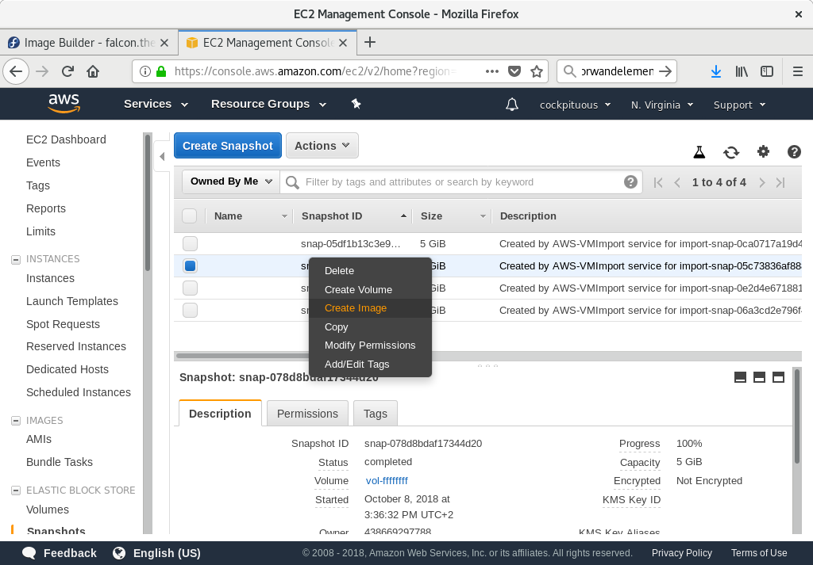
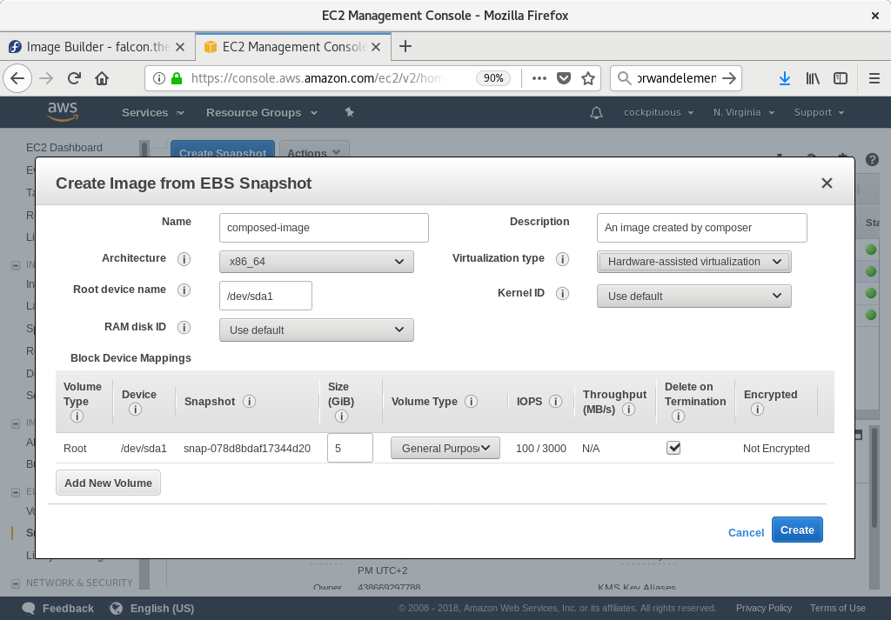
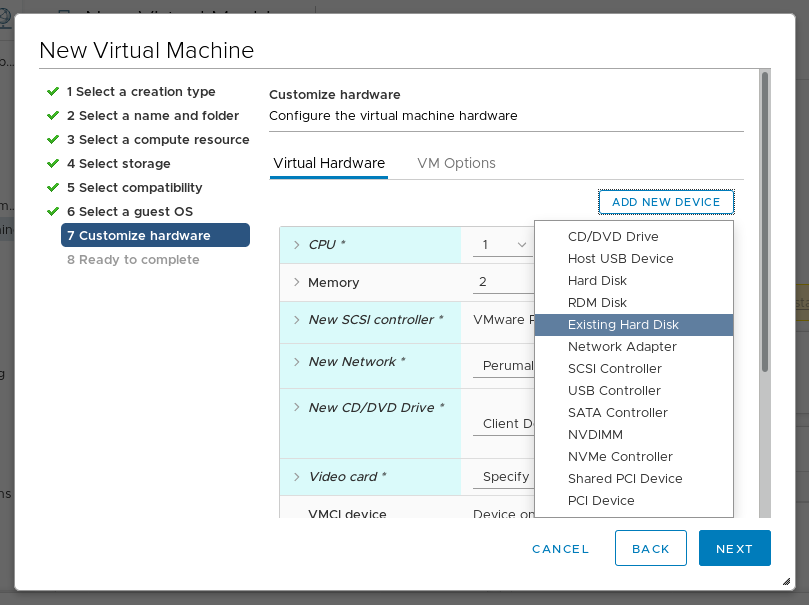
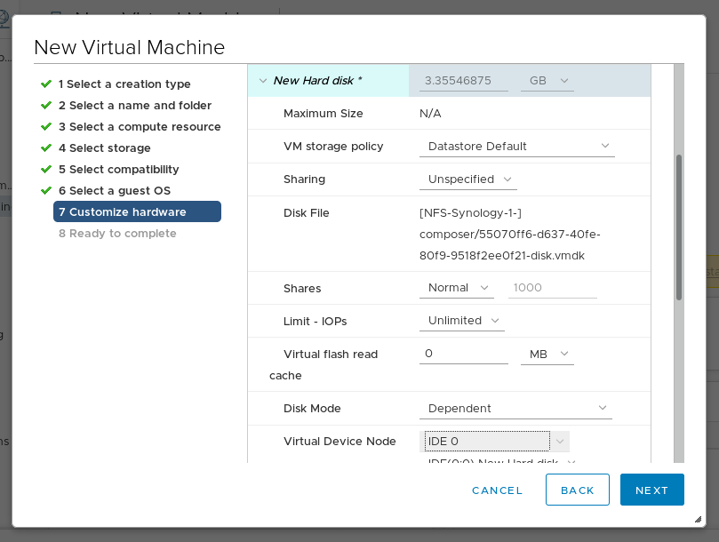
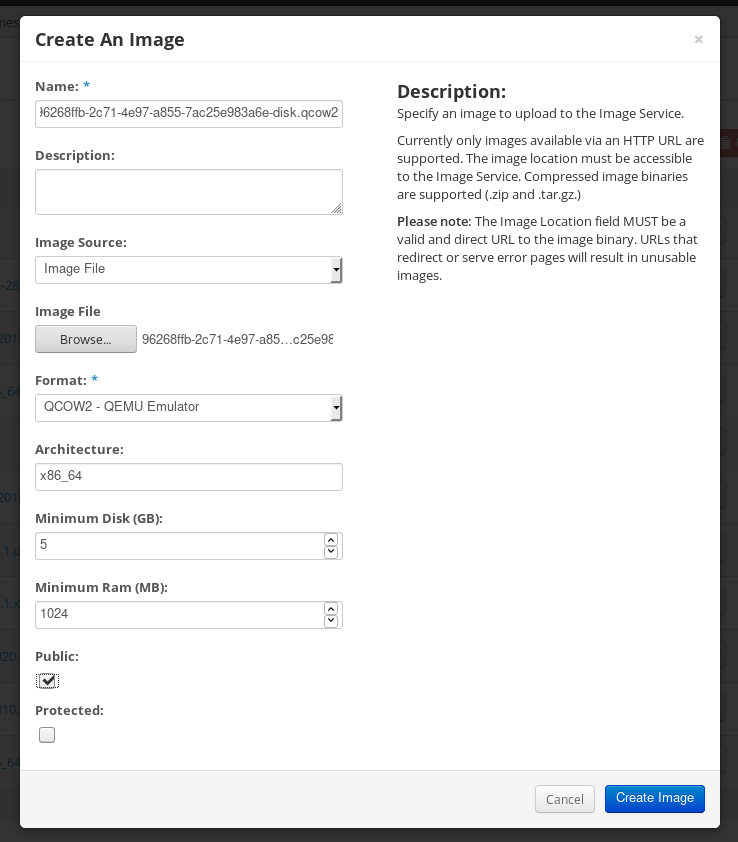
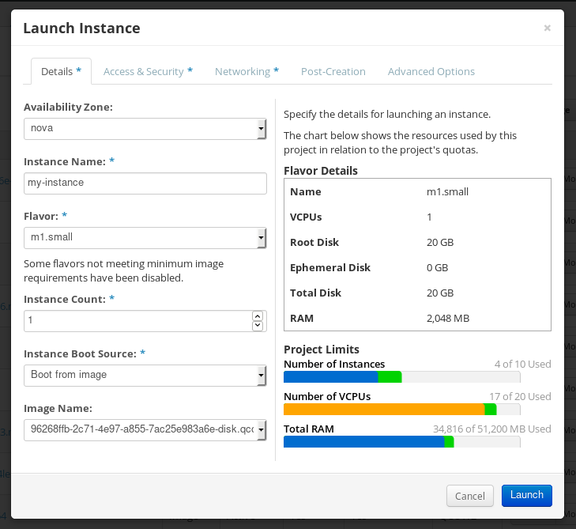

Chapter 9. 使用Image Builder部署云图像
Image Builder可以创建自定义系统映像，以便在各种提供程序的云中使用。要在云中使用自定义的RHEL系统映像，请使用相应的输出类型使用Image Builder创建系统映像，配置系统以上载映像，然后将映像上载到云帐户。
这描述了配置用于上载AWS AMI映像的系统的步骤。
先决条件
- 您必须在AWS IAM客户经理中配置访问密钥ID。
- 您必须准备好可写的S3存储桶 。
程序
安装Python 3和
pip工具：# yum install python3 # yum install python3-pip
使用
pip安装AWS命令行工具 ：# pip3 install awscli
根据您的AWS访问详细信息配置AWS命令行客户端：
$ aws configure AWS Access Key ID [None]: AWS Secret Access Key [None]: Default region name [None]: Default output format [None]:
配置AWS命令行客户端以使用您的存储桶：
$ BUCKET=bucketname $ aws s3 mb s3://$BUCKET将bucketname替换为实际的存储桶名称。
如果您以前没有这样做，请在IAM中创建
vmimportS3角色并授予其访问S3的权限：$ printf '{ "Version": "2012-10-17", "Statement": [ { "Effect": "Allow", "Principal": { "Service": "vmie.amazonaws.com" }, "Action": "sts:AssumeRole", "Condition": { "StringEquals":{ "sts:Externalid": "vmimport" } } } ] }' > trust-policy.json $ printf '{ "Version":"2012-10-17", "Statement":[ { "Effect":"Allow", "Action":[ "s3:GetBucketLocation", "s3:GetObject", "s3:ListBucket" ], "Resource":[ "arn:aws:s3:::%s", "arn:aws:s3:::%s/*" ] }, { "Effect":"Allow", "Action":[ "ec2:ModifySnapshotAttribute", "ec2:CopySnapshot", "ec2:RegisterImage", "ec2:Describe*" ], "Resource":"*" } ] }' $BUCKET $BUCKET > role-policy.json $ aws iam create-role --role-name vmimport --assume-role-policy-document file://trust-policy.json $ aws iam put-role-policy --role-name vmimport --policy-name vmimport --policy-document file://role-policy.json
本节介绍如何将AMI映像上载到AWS。
先决条件
- 必须设置系统才能上载AWS映像。
- 您必须拥有Image Builder创建的AWS图像。在创建映像时，在GUI或Amazon Machine Image Disk（.ami）中使用
ami输出类型。
程序
将图像推送到S3：
$ AMI=8db1b463-91ee-4fd9-8065-938924398428-disk.ami $ aws s3 cp $AMI s3://$BUCKET Completed 24.2 MiB/4.4 GiB (2.5 MiB/s) with 1 file(s) remaining ...上传到S3后，将图像作为快照导入EC2：
$ printf '{ "Description": "my-image", "Format": "raw", "UserBucket": { "S3Bucket": "%s", "S3Key": "%s" } }' $BUCKET $AMI > containers.json $ aws ec2 import-snapshot --disk-container file://containers.json将my-image替换为图像名称。
要跟踪导入的进度，请运行：
$ aws ec2 describe-import-snapshot-tasks --filters Name=task-state,Values=active
通过在EC2控制台中选择快照，右键单击它并选择
Create Image，从上载的快照Create Image：
在您创建的映像中选择
Virtualization类型的Hardware-assisted virtualization：
- 现在，您可以使用快照中的任何机制（CLI或AWS Console）运行实例。通过SSH使用您的私钥来访问生成的EC2实例。以
ec2-user身份登录。
Image Builder可以生成适合上载到VMware ESXi或vSphere系统的映像。这描述了将VMDK映像上载到VMware vSphere的步骤。
注意
由于VMWare部署通常没有配置cloud-init以将用户凭据注入虚拟机，因此我们必须自己在蓝图上执行该任务。
先决条件
- 您必须具有Image Builder创建的VMDK映像。创建映像时，在GUI中使用CLI中的
vmdk输出类型或GUI中的VMware虚拟机磁盘（.vmdk） 。
程序
通过HTTP将映像上传到vSphere。单击vCenter中的上
Upload Files：
创建VM时，在“
Device Configuration中删除默认的“New Hard Disk然后使用下拉列表选择“Existing Hard Disk映像：
确保使用
IDE设备作为您创建的磁盘的Virtual Device Node。默认值SCSI导致无法启动的虚拟机。
Image Builder可以生成适合上传到OpenStack云部署的图像，并在那里启动实例。这描述了将QCOW2映像上载到OpenStack的步骤。
先决条件
您必须具有由Image Builder创建的特定于OpenStack的映像。创建映像时，在GUI中使用CLI中的
openstack输出类型或GUI中的OpenStack Image（.qcow2） 。警告
Image Builder还提供通用QCOW2图像类型输出格式
qcow2或QEMU QCOW2 Image（.qcow2） 。不要将它与OpenStack图像类型混淆，后者也是QCOW2格式，但包含特定于OpenStack的进一步更改。
程序
将图像上传到OpenStack并从中启动实例。使用
Images界面执行此操作：
使用该图像启动实例：

- 您可以使用快照中的任何机制（CLI或OpenStack Web UI）运行实例。通过SSH使用您的私钥来访问生成的实例。以
cloud-user身份登录。